曲面図を平面化し、3D棒グラフを重ねる
3D-Bar-FlatSurf
このグラフは州ごとに区分したアメリカ合衆国の3D曲面を平面化し、緯度と経度の位置で都市の人口を表す3D棒グラフを重ねます。
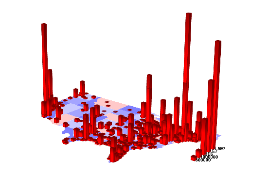
必要なOriginのバージョン:Origin 9.0 SR0
学習する項目
このチュートリアルでは、以下の項目について解説します:
- 3D曲面図を作図し、平面化する
- 既存の3D曲面図に3Dグラフを追加する
ステップ
このチュートリアルは、チュートリアルデータプロジェクト<Origin EXE フォルダ>\Samples\TutorialData.opjと関連しています。
- チュートリアルデータプロジェクトを開き、プロジェクトエクスプローラで、3D Bar on Flat
Surfaceフォルダを開きます。
- Mbook3Lをアクティブにし、メインメニューから作図：3D：3Dカラーマップ曲面を選択します。グラフウィンドウが作成されます。
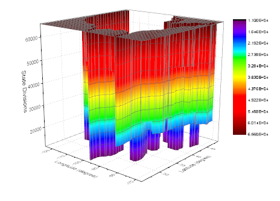
- グラフをダブルクリックして作図の詳細ダイアログを開きます。面タブで、表示グループの平面とZ方向に移動をチェックし、Zオフセットを0に、透明度を50にします。
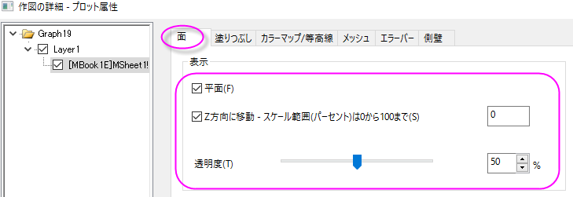
- カラーマップ/等高線タブで、レベルヘッダをクリックして、レベルの設定ダイアログを開きます。ダイアログ内で主レベル数を8、副レベル数を0にします。
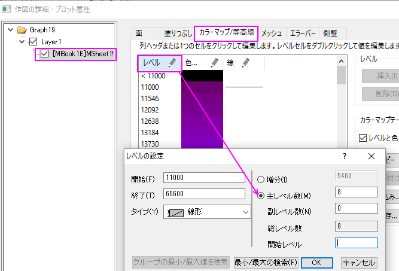
- OKボタンをクリックしてダイアログを閉じます。色塗りヘッダをクリックして、塗り方ダイアログを開きます。塗り方ダイアログではパレットをロードを選択し、パレットを選択ボタンを押してThermometerパレットを選び、パレットにリンクのチェックを外します。
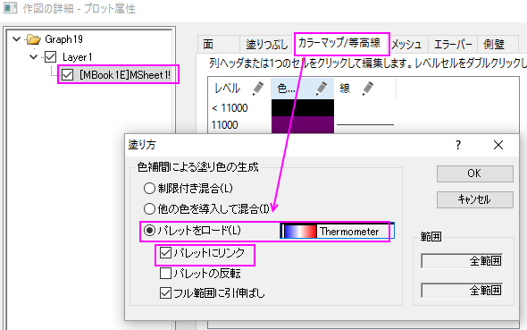
- OKボタンを押し、塗り方ダイアログを閉じます。塗り色セルの最後のレベルのものを選択して、色を白に設定します。
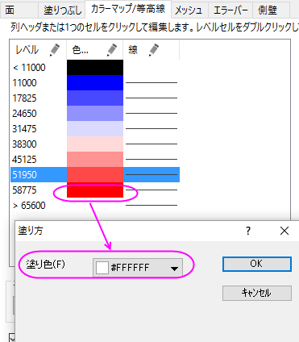
- カラーマップ/等高線タブにある等高線図を有効にするチェックを外します。
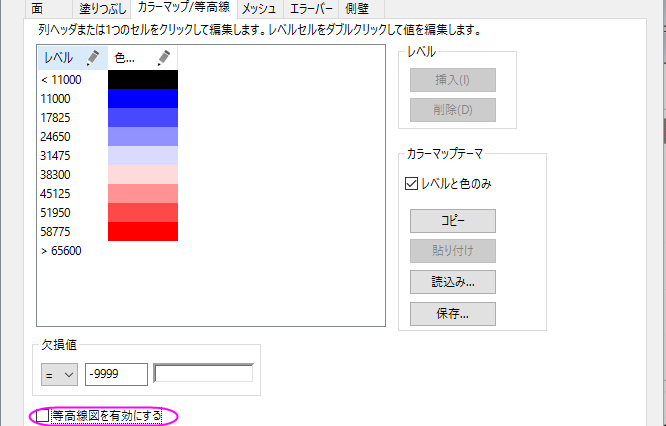
- メッシュタブに行き、有効にするのチェックを外します。
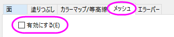
- 左側パネルでLayer1を選択して、右側パネルで平面タブを開きます。XY, YZ,
ZXのチェックを外します。
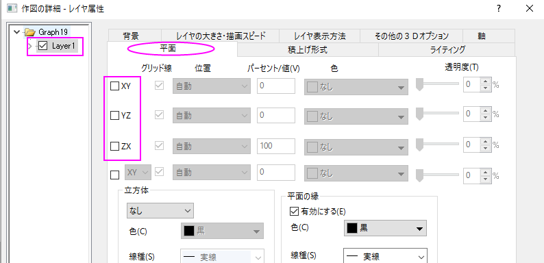
- OKをクリックして、作図の詳細ダイアログボックスを閉じます。グラフのレイヤアイコンを右クリックし、コンテキストメニューから作図のセットアップを選びます。作図のセットアップダイアログで利用可能なデータドロップダウンからフォルダ中のワークシートを選択し、作図形式を3D-棒グラフにします。Longitude(経度)、Latitude(緯度)、Population(人口)をX,Y,Zに割り当てます。追加ボタンをクリックして3D棒グラフを現在のレイヤに追加します。
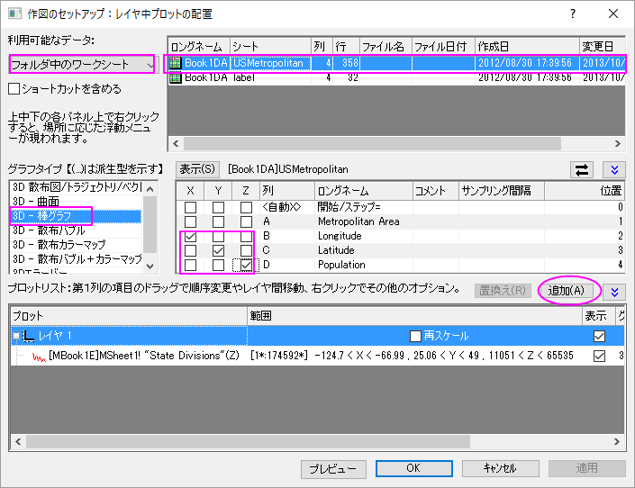
 |
作図のセットアップダイアログで3つのパネルを全ての表示するために ボタンをクリックしてグラフタイプパネルを開き、再度をクリックして利用可能なデータパネルを開きます。 ボタンをクリックしてグラフタイプパネルを開き、再度をクリックして利用可能なデータパネルを開きます。
詳細な情報は作図のセットアップで作図を参照してください。
|
- OKをクリックして、作図の詳細ダイアログボックスを閉じます。グラフ操作: 再スケールして全てを表示を選択し、グラフを再スケールします。
- 3D棒グラフをダブルクリックして、作図の詳細ダイアログを開きます。パターンタブを選択し、縁と塗りつぶしを赤にします。そして下図のように階調色を設定します。
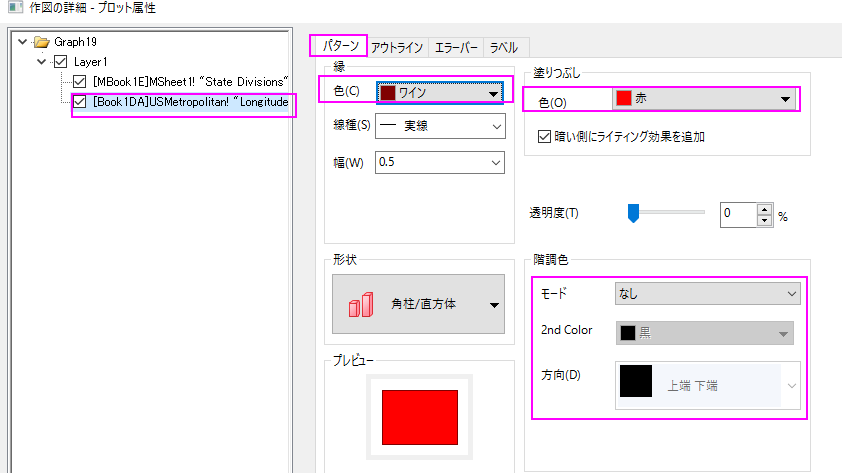
- OKをクリックして、作図の詳細ダイアログボックスを閉じます。グラフウィンドウのレイヤアイコンで右クリックを行い、コンテキストメニューからレイヤの内容を選択してレイヤ内容ダイアログを開きます。このダイアログの左上にあるドロップダウンリストからフォルダ中のワークシートを選択し、Labelシートにある列Cと列Dをぞれぞれ3D棒グラフと3D散布図として現在のレイヤに追加します。
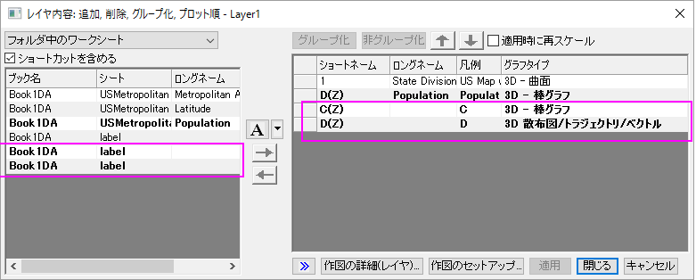
- OK をクリックして、レイヤ内容ダイアログを閉じます。3D棒グラフをダブルクリックして、作図の詳細ダイアログを開きます。左側パネルの3番目のプロットを選択し、パターンタブを開いて以下のように設定します。
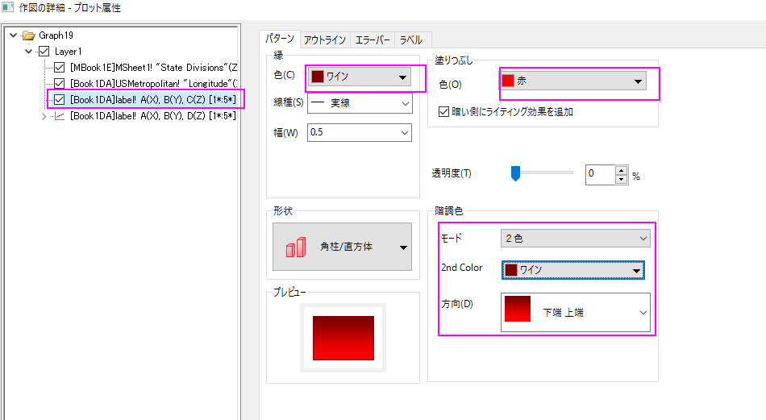
- アウトラインタブを開き、幅(%)を下図のように15 に設定します。
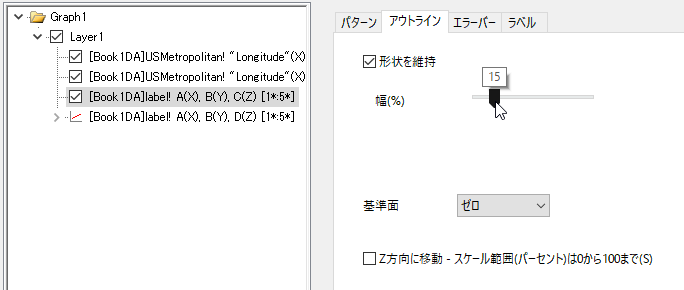
- 左側パネルの4番目のプロットを選択し、ラベルタブを開いて以下のように設定します。
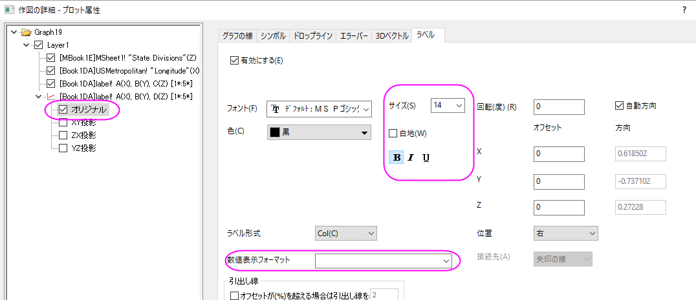
- 最終的に、次のグラフのようになります。